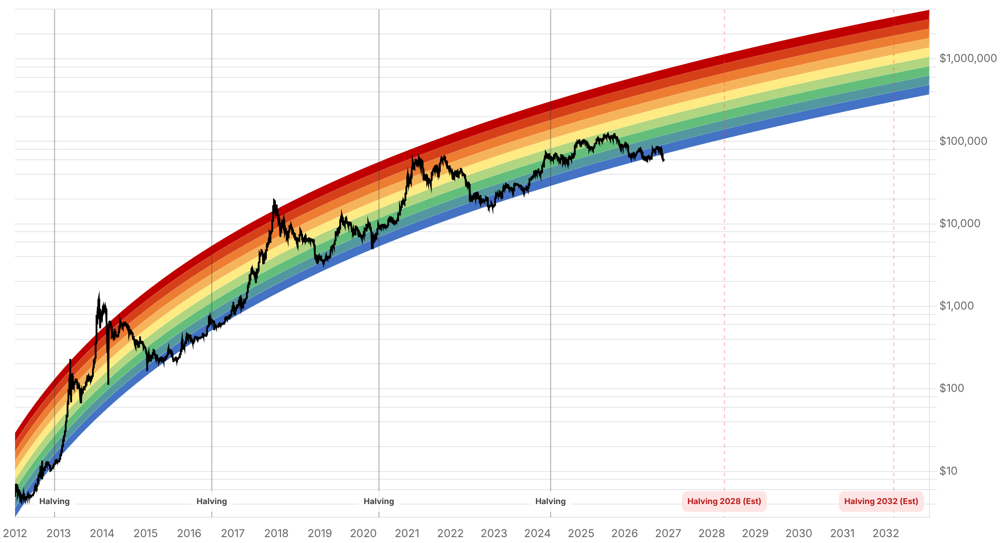

Reporte financiero
BTC cotiza en vivo a USD 61.701,55 (07:14 UTC), +1,99% frente al cierre previo de USD 60.495,95, extendiendo el rebote reportado ayer -la serie semanal (21 al 27 de noviembre) marca ahora +2,67%, con el mínimo de la ventana en USD 59.747,77 (24-nov) y el máximo en USD 61.701,55 (hoy, en vivo)-. La novedad principal es que Farside ya confirma oficialmente el dato del 25-nov, y resulta sensiblemente peor que la estimación preliminar de SoSoValue citada ayer: -USD 453,1M en salidas netas totales (IBIT -USD 329,7M, no los -USD 174M preliminares), llevando el acumulado oficial de noviembre a -USD 5,39MM en 18 jornadas (16 negativas, 2 positivas; promedio diario -USD 299,5M) -un análisis (vía particle.news) describe estas salidas como la pérdida de 'un comprador marginal clave' justo antes del vencimiento de opciones de hoy (27-nov, 08:00 UTC)-. En paralelo, el CEO de CryptoQuant, Ki Young Ju, publicó el 26-nov un mapa de liquidaciones que estima ~USD 16MM en cortos apalancados en riesgo entre USD 60.000 y 100.000, frente a menos de USD 5MM en largos por debajo de USD 60.000 ('The squeeze risk is on the short side'); consistente con eso, el open interest de futuros subió ~13.200 BTC con el funding volviendo a terreno positivo -señal de que el rebote lo compran traders apalancados, no demanda espot genuina-, mientras ~42.000 BTC salieron de las reservas rastreadas en exchanges durante el último mes, indicando liquidez más ajustada. En el plano técnico, el RSI diario profundiza a 27,21 (más sobrevendido que el 29,14 de ayer) y el histograma MACD se vuelve más negativo (-80,43 vs. -62,94 ayer) a pesar de la suba de precio -calificación técnica general 'Sell' en CoinLore (ADX 49,61, tendencia fuerte; SuperTrend bajista en USD 66.832; EMA50 en 'Sell' sobre USD 71.565)-, aunque la misma fuente marca una divergencia alcista en el MACD. El Fear & Greed Index se mantiene prácticamente plano en 12 (vs. 11 ayer), sin salir de 'Extreme Fear'. Sin cambios verificables hoy en Doctor Profit, Ali Martinez, Mark Yusko, Christopher Waller (fuentes sobre su postura más reciente resultan contradictorias en fecha/dirección, no se usan), la exclusión de Strategy de los índices MSCI (sigue efectiva al cierre del 30 de noviembre), la Clarity Act, la apelación del Reino Unido sobre los 61.000 BTC, BTCPay Server, Cantor Fitzgerald ni el reclamo sobre Irán.
El reporte de ayer citó -USD 453,12M como estimación preliminar de SoSoValue para el 25-nov, con IBIT moderándose a -USD 174M frente al -USD 573M del 23-nov, pendiente de confirmación de Farside. Hoy Farside/tftc.io ya publica ese dato como oficial: -USD 453,1M en salidas netas totales, con IBIT aportando -USD 329,7M -casi el doble de lo que sugería la cifra preliminar de SoSoValue, no la desaceleración que parecía insinuarse ayer-. Con esto, el acumulado oficial de noviembre sube a -USD 5,39MM en 18 jornadas (16 negativas, 2 positivas), con un promedio diario de -USD 299,5M. Farside todavía no publica cifra para el 26-nov.
Un análisis de mercado enmarca las salidas récord de ETFs (USD 4,94MM acumulados a través del 24-nov, con IBIT representando ~83-84% del total) como la pérdida de 'un comprador marginal clave' justo antes del vencimiento de opciones del 27-nov (08:00 UTC). El open interest de futuros subió ~13.200 BTC con el funding rate volviendo a terreno positivo tras el rebote -lectura de que son traders apalancados comprando la caída, no compradores espot sin apalancamiento-. En paralelo, ~42.000 BTC salieron de las reservas de exchanges rastreadas en el último mes, señal de liquidez más ajustada aunque las tenencias de los ETFs se mantienen elevadas.
El CEO de CryptoQuant, Ki Young Ju, publicó el 26-nov en X un mapa de liquidaciones que estima unos USD 16.000M en posiciones cortas en riesgo si el precio avanza entre USD 60.000 y USD 100.000, frente a menos de USD 5.000M en posiciones largas en riesgo por debajo de USD 60.000. La metodología de CryptoQuant sigue cambios horarios de open interest en siete exchanges, descarta niveles ya cruzados y estima liquidaciones en intervalos de USD 500. El mismo análisis señala como catalizadores próximos el vencimiento de opciones de hoy (27-nov, 08:00 UTC) y la decisión de la Fed del 9 de diciembre.
El RSI diario (CoinLore) cae a 27,21 -más sobrevendido que el 29,14 de ayer-, y el histograma MACD se vuelve más negativo (-80,43, MACD -4.534,08 vs. señal -4.453,65) frente a -62,94 ayer, lo que indica que el momentum bajista se profundiza incluso mientras el precio rebota. La calificación técnica general es 'Sell' (score -20,29), con ADX en 49,61 (tendencia fuerte), SuperTrend bajista en USD 66.832 y EMA de 50 días en 'Sell' sobre USD 71.565. La misma fuente marca, no obstante, una divergencia alcista en el MACD -una señal a monitorear, no una reversión confirmada-.
El índice de alternative.me sube apenas un punto, a 12 (vs. 11 ayer), sin salir de 'Extreme Fear' -el sentimiento sigue sin acompañar el rebote de precio-. Entre las voces nuevas, el analista Crypto Rover señala a diciembre/Navidad como posible punto de inflexión hacia el próximo ciclo alcista, citando como paralelo histórico un rally de cerca de 90% en los cuatro meses posteriores a la Navidad del ciclo bajista anterior -un antecedente histórico, no un objetivo de precio concreto para este ciclo-.
No se encontró declaración nueva y verificable hoy de Doctor Profit ni de Ali Martinez desde sus comentarios de ayer. Las fuentes sobre la postura más reciente de Christopher Waller sobre la reunión de la Fed de diciembre resultan contradictorias en fecha y dirección (hike vs. cut según la fuente), por lo que no se usan hasta poder confirmarlas contra una fuente primaria; tampoco hay novedad de Mark Yusko desde su comentario del 18-nov. La exclusión de Strategy (MSTR) de los índices MSCI sigue efectiva al cierre del 30 de noviembre, sin cambios desde el anuncio original. No hay avance nuevo en la Clarity Act, la apelación del Reino Unido sobre los 61.000 BTC, BTCPay Server, la posición de Cantor Fitzgerald en Strategy ni el reclamo no verificado vinculado a Irán.
| Periodo | Valor |
|---|---|
| 21 nov | 60094.09 |
| 22 nov | 61161.91 |
| 23 nov | 61210.98 |
| 24 nov | 59747.77 |
| 25 nov | 60378.2 |
| 26 nov | 60494.71 |
| 27 nov (en vivo) | 61701.55 |
| Periodo | Valor |
|---|---|
| Hoy | 12 |

“The squeeze risk is on the short side.”
El rebote sobre USD 60.000 sigue sin confirmación de demanda espot genuina: el open interest de futuros y el funding positivo apuntan a cobertura de cortos y compra apalancada, en un contexto donde CryptoQuant estima USD 16.000M en cortos en riesgo entre USD 60.000 y 100.000 (vs. menos de USD 5.000M en largos por debajo de USD 60.000). El vencimiento de opciones de hoy (27-nov, 08:00 UTC) es el catalizador inmediato a monitorear.
La confirmación oficial de Farside del 25-nov resultó peor que la estimación preliminar que ayer sugería una posible desaceleración (IBIT -USD 329,7M confirmado vs. -USD 174M preliminar), lo que eleva el acumulado de noviembre a -USD 5,39MM en 18 jornadas. La próxima decisión de la Fed (9-dic) se suma como catalizador de mediano plazo junto con la confirmación pendiente del dato de ETFs del 26-nov.
Sin cambios en los objetivos de precio de largo plazo ya reportados en ediciones anteriores (Citigroup, Bernstein, Standard Chartered, Tom Lee, NYDIG, Armstrong, piso de costo de producción de JPMorgan en USD 94.000, y las lecturas de Doctor Profit/Ali Martinez de ayer). La única lectura nueva de esta edición es la de Crypto Rover, que marca diciembre/Navidad como posible punto de inflexión de ciclo citando un paralelo histórico (~90% de rally en los 4 meses posteriores a Navidad del ciclo bajista anterior) -un antecedente a monitorear, no un objetivo de precio verificado para este ciclo.
El open interest de futuros subió y el funding volvió a positivo junto con el repunte de precio, mientras las salidas de ETFs continúan (y se confirmaron peores de lo estimado para el 25-nov) -el patrón sugiere cobertura de cortos y compra apalancada, no demanda espot nueva-. Conviene esperar confirmación con volumen spot genuino y/o flujos de ETF positivos antes de leer esto como cambio de tendencia.
Son los dos catalizadores de corto/mediano plazo más concretos señalados hoy. El mapa de liquidaciones de CryptoQuant sugiere que un movimiento por encima de USD 60.000 podría forzar liquidaciones de cortos adicionales (~USD 16.000M en riesgo hasta USD 100.000), lo que podría amplificar la volatilidad en cualquier dirección alrededor de estas fechas.
Por segunda vez consecutiva (24-nov y ahora 25-nov), la cifra oficial de Farside llegó sensiblemente distinta -y en este caso peor- que la estimación preliminar de SoSoValue citada un día antes. El patrón de confirmación con ~1 día de rezago y revisión al alza (en magnitud de salida) ya es consistente en las últimas dos ediciones.